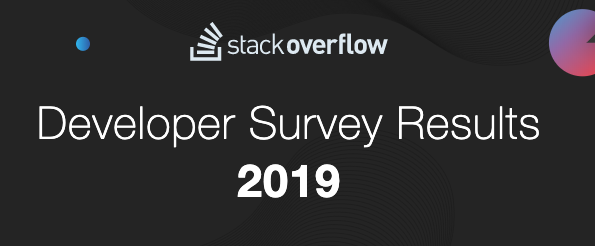
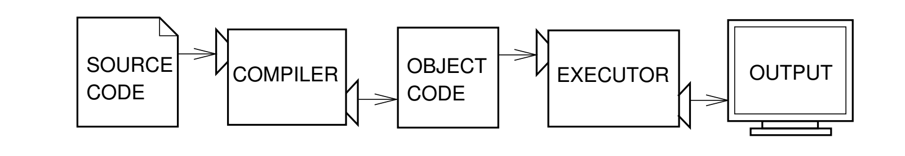
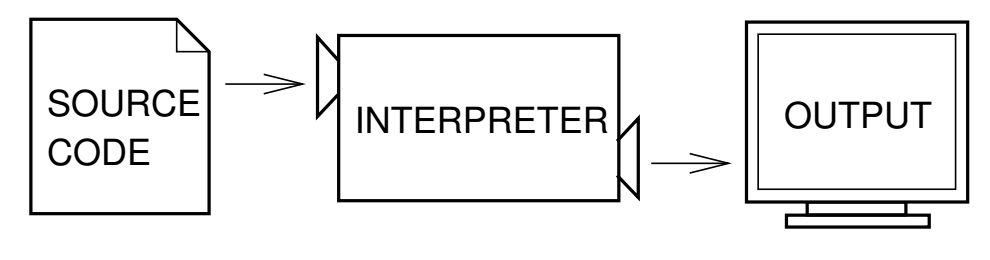
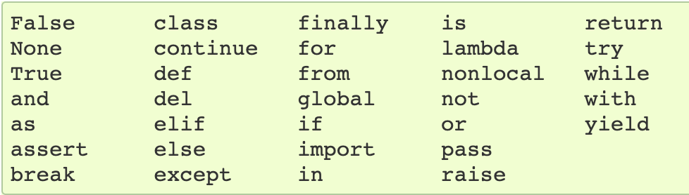

class: center, middle # Introduction To Python --- class: center, middle # Why bother to learn Python? <p></p> https://insights.stackoverflow.com/survey/2019 --- ## Survey Results - Python, the fastest-growing major programming language, has risen in the ranks of programming languages in our survey yet again, edging out Java this year and standing as the second most loved language (behind Rust). - Python 4th most popular technology for "Programming, Scripting, and Markup Languages" - Python is 2nd most loved language - Python is the most wanted language for the third year in a row, meaning that developers who do not yet use it say they want to learn it. - Python is among the top languages associated with highest salaries --- ## Why is Python popular, loved and wanted and why you should learn Python? 1. Python is readable and easy to maintain 2. Python allows for multiple programming paradigms 3. Compatible with major platforms and systems 4. Robust standard library 5. Many open source frameworks and tools 6. Simplify complex software development 7. Adopt test driven development --- ## What kind of applications can you build with Python? 1. Web Applications 2. Scientific Applications and Analysis 3. Numerical Analysis (Big Data) 4. Desktop GUIs 5. Automation Scripts 6. Game Development --- # The Python programming language - Python is a **high-level language** similar to C, C++ and Java. Meaning the computer cannot directly run applications written in Python. - While C++ and Java requires compilers to run, Python needs an interpreter. --- ### Compiler <p></p> A *compiler* reads the program and translates it completely before the program starts running. In programming languages that uses compiler, you often encounter `Compile Time Errors`. --- ### Interpreter <div style="width:100%;text-align:center;"><p></p></div> An interpreter reads a high-level program and executes it, meaning that it does what the program says. It processes the program a little at a time, alternately reading lines and performing computations. --- # Python is an interpreted language Python code is executed by an interpreter and there are two ways to use the interpreter: **interactive mode** and **script mode**. ### Interactive Mode You type Python programs directly into the prompt, and the interpreter executes the line. ```python >>> 1 + 1 2 ``` The chevron, `>>>` , is the prompt the interpreter uses to indicate that it is ready. --- ### Script Mode You can store your Python code in a file and use the interpreter to execute it. By convention, Python scripts have file names that end with `.py`. To execute the script, you have to tell the interpreter the name of the file. e.g. You want to run a Python script named `hello_world.py`. Assuming you are in the same directory as `hello_world.py`, You can execute you Python script by running the comman `python hello_world.py` into the terminal or command line. --- ## `Hello, world!` in Interactive Mode Open a Python Interpreter and type in the ff after the `>>>` ```python >>> print('Hello, world!') ``` --- ## `Hello, world!` in Script Mode 1. Open a text editor 2. Type `print('Hello, world!')` 3. Save the file as `hello_world.py` 4. Open a terminal or a command line 5. Change the current directory to the directory of `hello_wcorld.py` 6. Run the program by running `python hello_world.py` --- # The Python documentation ## https://python.org This website contains information about Python and Python related libraries. It also gives you the ability to search through the documentation. ## Through the Interpreter and `help` function You can type `help()` to start the online help utility. You can also type `help('print')` to get information about the print function. --- # Values and Types **Value** - One of the most basic things a programming language works with **Type** - The type of data the value holds e.g. <table style="width:50%;text-align:left;"> <tr> <th>value</th> <th>type</th> </tr> <tr> <td>1</td> <td>int</td> </tr> <tr> <td>4.2</td> <td>float</td> </tr> <tr> <td>'Hello, world!'</td> <td>str</td> </tr> </table> --- # Variables An **assignment statement** creates new variables and gives them value: ```python >>> message = 'Welcome back to School!' >>> n = 17 >>> pi = 3.141 ``` In Python, you do not need to specify the type of the variable on initialization. The type of the variable will automatically be the type of the value assigned to it. e.g. ```python >>> message = 'Welcome back to School!' >>> type(message) <type 'str'> >>> n = 17 >>> type(n) <type 'int'> >>> pi = 3.141 >>> type(n) <type 'int'> ``` --- # Variable names and keywords While you are in charge of naming your variables, programmers generally choose names for their variables that are **meaningful**. - Variable names can contain both letters and number but they have to begin with a letter. - Ideally begins with a lowercase letter (even though uppercase if perfectly valid) - Can contain underscore(_). Underscore is oftend used in names with multiple words. #### What happens if you declare an illegal variable name? * Answer: * You get a syntax error! Example of invalid syntax ```python >>> 76trombones = 'big parade' SyntaxError: invalid syntax >>> class = 'Web Development' SyntaxError: invalid syntax >>> more@ = 10000 SyntaxError: invalid syntax ``` --- ### Python keywords cannot be uses as variable names <p></p> --- Exercise: Start the Python interpreter and use it as a calculator. Answer the problem below ``` If you run a 10 km race in 43 minutes and 30 seconds, what is your average time per mile? What is your average speed in miles per hour? ``` - Make sure you name your variables meanifully e.g. `ave_time_per_mile` = 10 - Output should be in complete sentences e.g. "The average time per mile is 10 minutes" Hint: - There are 1.61 km in a mile. - To print multiple values in a single line, you can use commas e.g. `print('The average time per mile is ', 10, ' minutes')` Submit a screenshot of the interpreter to google classroom. ---